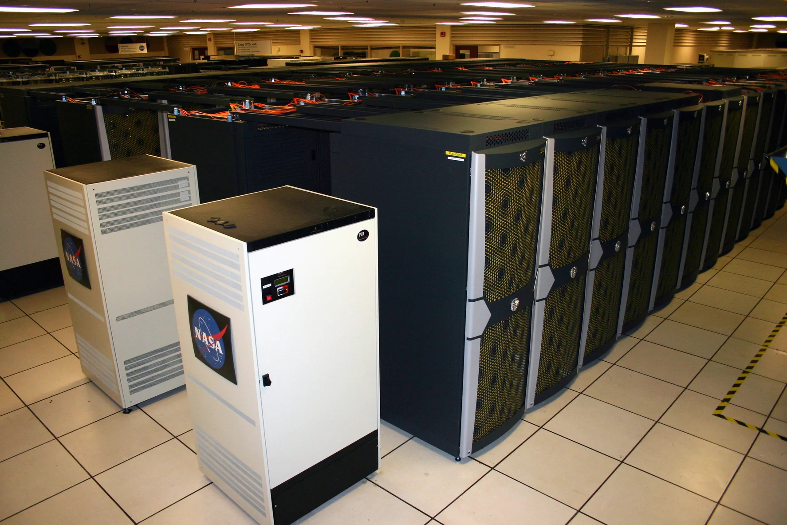
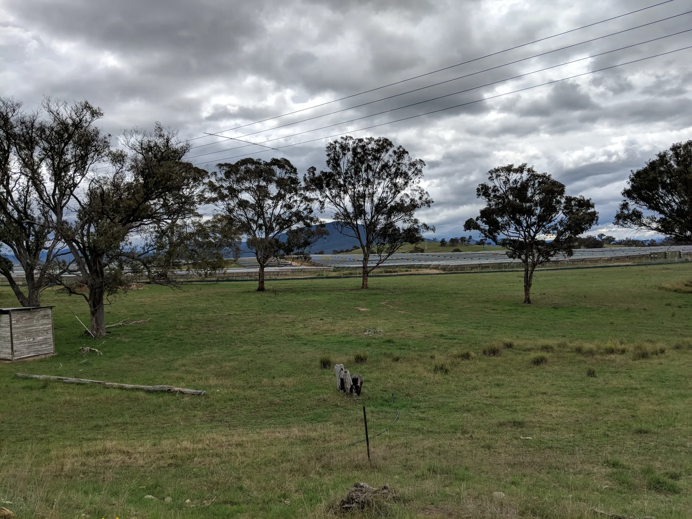
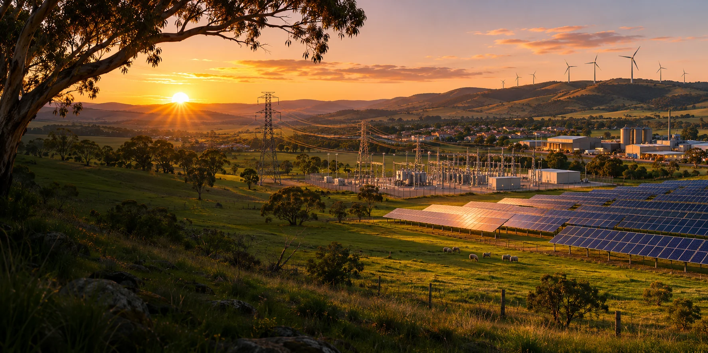

Default scenario dated 7 November 2026.





A Fair Go in the Age of Superintelligence
Build new capability while preserving the electricity allocated to clean-energy transition and essential development.
AI-generated concept image · 7 November 2026 · Image credits and prompt
Default scenario dated 7 November 2026.

